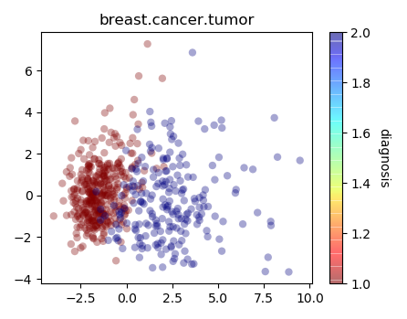
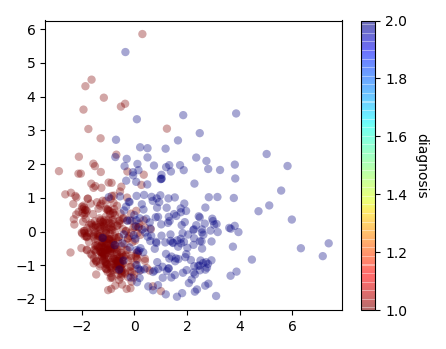
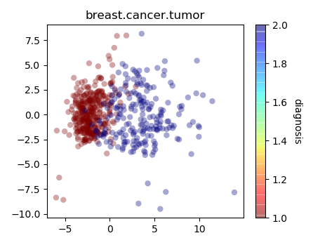
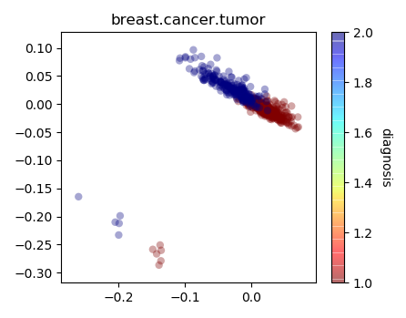
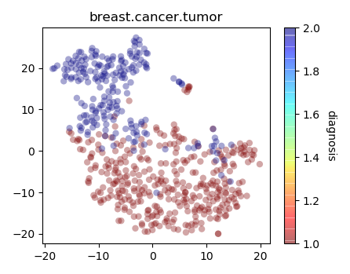

Input a text to receive response from Alfarvis
Enter Bye to close the program
Alfa is data exploration and analysis software that uses natural language
To begin data exploration, you should first load a dataset using the "load command". For example "load tour de france dataset" to load a cycling dataset
To get a list of datasets that can be loaded, call "list files"
Once you have loaded a dataset, you can perform different sets of commands : visualization, statistics, machine learning
You can list commands using "list commands" or "list visualization/statistics... commands" for specific command list
You can also get individual help for each of the commands by calling "help [command name]"
Apart from the above commands, there are also data handling commands that can set row labels, set reference for setting legends etc
You can get a list of data handling commands by calling "list data handling commands"
______________________________________________________
User: load breast cancer dataset
Alfa:
Running command in background!
Loaded breast cancer tumor
Showing Statistics for breast cancer tumor
Loaded file: breast_tumor_data.csv
______________________________________________________
User: set reference to diagnosis
Alfa:
Setting reference to diagnosis
______________________________________________________
User: pca on breast cancer dataset
Alfa:

Saving result to figure.1.pca.cancer.breast.tumor
______________________________________________________
User: pca on area concavity fractal.dimension perimeter
Alfa:

Saving result to figure.2.pca
______________________________________________________
User: isomap on breast cancer dataset
Alfa:

Saving result to figure.3.ismp.cancer.breast.tumor
______________________________________________________
User: lle on breast cancer dataset
Alfa:

Saving result to figure.4.lle.cancer.breast.tumor
______________________________________________________
User: tsne on breast cancer dataset
Alfa:

Saving result to figure.5.tsne.cancer.breast.tumor
______________________________________________________
User: save notebook
Alfa: